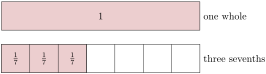
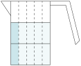
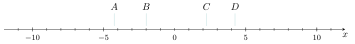
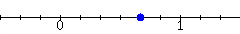
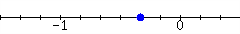
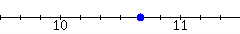
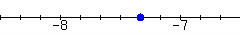
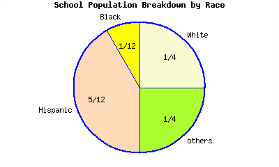
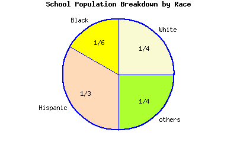

Section A.1 Fractions and Fraction Arithmetic
The word “fraction” comes from the Latin word fractio, which means “break into pieces”. For thousands of years, cultures from all over the world have used fractions to understand parts of a whole.
Subsection A.1.1 Visualizing Fractions
Parts of a Whole.
One approach to understanding fractions is to think of them as parts of a whole.
In Figure 2, we see \(1\) whole divided into \(7\) parts. Since \(3\) parts are shaded, we have an illustration of the fraction \(\frac{3}{7}\text{.}\) The denominator \(7\) tells us how many parts to cut up the whole; since we have \(7\) parts, they’re called “sevenths”. The numerator \(3\) tells us how many sevenths to consider.


Checkpoint A.1.5. A Fraction on a Number Line.

Division.
Fractions can also be understood through division.
Checkpoint A.1.7. Seeing a Fraction as Division Arithmetic.
Subsection A.1.2 Equivalent Fractions
It’s common to have two fractions that represent the same amount. Consider \(\frac{2}{5}\) and \(\frac{6}{15}\) represented in various ways in Figures 8–Figure 10.
![one rectangle that is five times as wide as it is tall; the entire rectangle is shaded; there is a 1 in the center of the rectangle; a second rectangle that is also five times as wide as it is tall; it is subdivided equally into five squares; the first two squares are shaded; there is a 1/5 in the center of each of the first two squares; a third rectangle that is also five times as wide as it is tall; it is subdivided equally into fifteen adjacent rectangles; the first six of these smaller rectangles are shaded; there is a 1/15 in the center of each of the first six smaller rectangles](generated/latex-image/equivalent-fractions-parts.svg)
Those two fractions, \(\frac{2}{5}\) and \(\frac{6}{15}\) are equal, as those figures demonstrate. In addition, both fractions are equal to \(0.4\) as a decimal. If we must work with this number, the fraction that uses smaller numbers, \(\frac{2}{5}\text{,}\) is preferable. Working with smaller numbers decreases the likelihood of making a human arithmetic error and it also increases the chances that you might make useful observations about the nature of that number.
So if you are handed a fraction like \(\frac{6}{15}\text{,}\) it is important to try to reduce it to “lowest terms”. The most important skill you can have to help you do this is to know the multiplication table well. If you know it well, you know that \(6=2\cdot3\) and \(15=3\cdot5\text{,}\) so you can break down the numerator and denominator that way. Both the numerator and denominator are divisible by \(3\text{,}\) so they can be “factored out” and then as factors, cancel out.
\begin{align*}
\frac{6}{15}\amp=\frac{2\cdot3}{3\cdot5}\\
\amp=\frac{2\cdot\cancelhighlight{3}}{\cancelhighlight{3}\cdot5}\\
\amp=\frac{2\cdot1}{1\cdot5}\\
\amp=\frac{2}{5}
\end{align*}
Checkpoint A.1.11. Reducing Fractions.
Reduce these fractions into lowest terms.
(a)
\(\dfrac{14}{42}=\)
(b)
\(\dfrac{8}{30}=\)
(c)
\(\dfrac{70}{90}=\)
Sometimes it is useful to do the opposite of reducing a fraction, and build up the fraction to use larger numbers.
Checkpoint A.1.12. Building Up a Fraction.
Sayid scored \(\frac{21}{25}\) on a recent exam. Build up this fraction so that the denominator is \(100\text{,}\) so that Sayid can understand what percent score he earned.
Explanation.
To change the denominator from \(25\) to \(100\text{,}\) it needs to be multiplied by \(4\text{.}\) So we calculate
\begin{equation*}
\begin{aligned}
\frac{21}{25}\amp=\frac{21\cdot4}{25\cdot4}\\
\amp=\frac{84}{100}
\end{aligned}
\end{equation*}
So the fraction \(\frac{21}{25}\) is equivalent to \(\frac{84}{100}\text{.}\) (This means Sayid scored an \(84\%\text{.}\))
Subsection A.1.3 Multiplying with Fractions
Example A.1.13.
Suppose a recipe calls for \(\frac{2}{3}\) cup of milk, but we’d like to quadruple the recipe (make it four times as big). We’ll need four times as much milk, and one way to measure this out is to fill a measuring cup to \(\frac{2}{3}\) full, four times:

When you count up the shaded thirds, there are eight of them. So multiplying \(\frac{2}{3}\) by the whole number \(4\text{,}\) the result is \(\frac{8}{3}\text{.}\) Mathematically:
\begin{align*}
4\cdot\frac{2}{3}\amp=\frac{4\cdot2}{3}\\
\amp=\frac{8}{3}
\end{align*}
Fact A.1.14. Multiplying a Fraction and a Whole Number.
When you multiply a whole number by a fraction, you may just multiply the whole number by the numerator and leave the denominator alone. In other words, as long as \(d\) is not \(0\text{,}\) then a whole number and a fraction multiply this way:
\begin{equation*}
a \cdot \frac{c}{d} = \frac{a\cdot c}{d}
\end{equation*}
Example A.1.15.
We could also use multiplication to decrease amounts. Suppose we needed to cut the recipe down to just one fifth. Instead of four of the \(\frac{2}{3}\) cup milk, we need one fifth of the \(\frac{2}{3}\) cup milk. So instead of multiplying by \(4\text{,}\) we multiply by \(\frac{1}{5}\text{.}\) But how much is \(\frac{1}{5}\) of \(\frac{2}{3}\) cup?
If we cut the measuring cup into five equal vertical strips along with the three equal horizontal strips, then in total there are \(3\cdot5=15\) subdivisions of the cup. Two of those sections represent \(\frac{1}{5}\) of the \(\frac{2}{3}\) cup.

In the end, we have \(\frac{2}{15}\) of a cup. The denominator \(15\) came from multiplying \(5\) and \(3\text{,}\) the denominators of the fractions we had to multiply. The numerator \(2\) came from multiplying \(1\) and \(2\text{,}\) the numerators of the fractions we had to multiply.
\begin{align*}
\frac{1}{5}\cdot\frac{2}{3}\amp=\frac{1\cdot2}{5\cdot3}\\
\amp=\frac{2}{15}
\end{align*}
Fact A.1.16. Multiplication with Fractions.
As long as \(b\) and \(d\) are not \(0\text{,}\) then fractions multiply this way:
\begin{equation*}
\frac{a}{b} \cdot \frac{c}{d} = \frac{a\cdot c}{b \cdot d}
\end{equation*}
Checkpoint A.1.17. Fraction Multiplication.
Simplify these fraction products.
(a)
\(\dfrac{1}{3}\cdot\dfrac{10}{7}=\)
(b)
\(\dfrac{12}{3}\cdot\dfrac{15}{3}=\)
(c)
\(-\dfrac{14}{5}\cdot\dfrac{2}{3}=\)
(d)
\(\dfrac{70}{27}\cdot\dfrac{12}{-20}=\)
Explanation.
Before we multiply fractions, note that \(\frac{12}{-20}\) reduces to \(\frac{-3}{5}\text{.}\) So we have \(\frac{70}{27}\cdot\frac{-3}{5}\text{.}\) Both the numerator of the first fraction and denominator of the second fraction are divisible by \(5\text{,}\) so it helps to reduce both fractions accordingly and get \(\frac{14}{27}\cdot\frac{-3}{1}\text{.}\) Both the denominator of the first fraction and numerator of the second fraction are divisible by \(3\text{,}\) so it helps to reduce both fractions accordingly and get \(\frac{14}{9}\cdot\frac{-1}{1}\text{.}\) Now we are just multiplying \(\frac{14}{9}\) by \(-1\text{,}\) so the result is \(\frac{-14}{9}\text{.}\)
Subsection A.1.4 Division with Fractions
How does division with fractions work? Are we able to compute/simplify each of these examples?
-
\(\displaystyle 3\div\frac{2}{7}\)
-
\(\displaystyle \frac{18}{19}\div5\)
-
\(\displaystyle \frac{14}{3}\div\frac{8}{9}\)
-
\(\displaystyle \frac{\ \frac{2}{5}\ }{\frac{5}{2}}\)
We know that when we divide something by \(2\text{,}\) this is the same as multiplying it by \(\frac{1}{2}\text{.}\) Conversely, dividing a number or expression by \(\frac{1}{2}\) is the same as multiplying by \(\frac{2}{1}\text{,}\) or just \(2\text{.}\) The more general property is that when we divide a number or expression by \(\frac{a}{b}\text{,}\) this is equivalent to multiplying by the reciprocal \(\frac{b}{a}\text{.}\)
Fact A.1.18. Division with Fractions.
As long as \(b\text{,}\) \(c\) and \(d\) are not \(0\text{,}\) then division with fractions works this way:
\begin{equation*}
\frac{a}{b} \div \frac{c}{d} = \frac{a}{b}\cdot\frac{d}{c}
\end{equation*}
Example A.1.19.
With our examples from the beginning of this subsection:
-
\(\displaystyle \begin{aligned}[t] 3\div\frac{2}{7}\amp=3\multiplyright{\frac{7}{2}}\\ \amp=\divideunder{3}{1}\cdot\frac{7}{2}\\ \amp=\frac{21}{2}\\ \ \end{aligned}\)
-
\(\displaystyle \begin{aligned}[t] \frac{18}{19}\div5\amp=\frac{18}{19}\div\divideunder{5}{1}\\ \amp=\frac{18}{19}\multiplyright{\frac{1}{5}}\\ \amp=\frac{18}{95}\\ \ \end{aligned}\)
-
\(\displaystyle \begin{aligned}[t] \frac{14}{3}\div\frac{8}{9}\amp=\frac{14}{3}\multiplyright{\frac{9}{8}}\\ \amp=\frac{14}{\highlight{1}}\cdot\frac{\highlight{3}}{8}\\ \amp=\frac{\highlight{7}}{1}\cdot\frac{3}{\highlight{4}}\\ \amp=\frac{21}{4} \end{aligned}\)
-
\(\displaystyle \begin{aligned}[t] \frac{\ \frac{2}{5}\ }{\frac{5}{2}}\amp=\frac{2}{5}\highlight{{}\div{}}\frac{5}{2}\\ \amp=\frac{2}{5}\multiplyright{\frac{2}{5}}\\ \amp=\frac{4}{25}\\ \ \end{aligned}\)
Checkpoint A.1.20. Fraction Division.
Simplify these fraction division expressions.
(a)
\(\dfrac{1}{3}\div\dfrac{10}{7}=\)
(b)
\(\dfrac{12}{5}\div5=\)
(c)
\(-14\div\dfrac{3}{2}=\)
(d)
\(\dfrac{70}{9}\div\dfrac{11}{-20}=\)
Subsection A.1.5 Adding and Subtracting Fractions
With whole numbers and integers, operations of addition and subtraction are relatively straightforward. The situation is almost as straightforward with fractions if the two fractions have the same denominator. Consider
\begin{equation*}
\frac{7}{2} + \frac{3}{2} = 7\text{ halves}+3\text{ halves}
\end{equation*}
In the same way that \(7\) tacos and \(3\) tacos make \(10\) tacos, we have:
\begin{equation*}
\begin{array}{ccccc}
7\text{ halves}{}\amp+{}\amp 3\text{ halves}\amp=\amp 10\text{ halves} \\
\frac{7}{2}{}\amp+{}\amp\frac{3}{2}\amp=\amp\frac{10}{2} \\
\amp \amp \amp=\amp5 \\
\end{array}
\end{equation*}
Fact A.1.21. Adding/Subtracting with Fractions Having the Same Denominator.
To add or subtract two fractions having the same denominator, keep that denominator, and add or subtract the numerators.
\begin{align*}
\frac{a}{b}+\frac{c}{b}\amp=\frac{a+c}{b}\amp\frac{a}{b}-\frac{c}{b}\amp=\frac{a-c}{b}
\end{align*}
If it’s possible, useful, or required of you, simplify the result by reducing to lowest terms.
Checkpoint A.1.22. Fraction Addition and Subtraction.
Add or subtract these fractions.
(a)
\(\frac{1}{3}+\frac{10}{3}=\)
(b)
\(\frac{13}{6}-\frac{5}{6}=\)
Whenever we’d like to combine fractional amounts that don’t represent the same number of parts of a whole (that is, when the denominators are different), finding sums and differences is more complicated.
Example A.1.23. Quarters and Dimes.
Find the sum \(\frac{3}{4}+\frac{2}{10}\text{.}\) Does this seem intimidating? Consider this:
So if you know what to look for, the expression \(\frac{3}{4}+\frac{2}{10}\) is like adding \(75\) cents and \(20\) cents, which gives you \(95\) cents. As a fraction of one dollar, that is \(\frac{95}{100}\text{.}\) So we can report
\begin{equation*}
\frac{3}{4}+\frac{2}{10}=\frac{95}{100}\text{.}
\end{equation*}
(Although we should probably reduce that last fraction to \(\frac{19}{20}\text{.}\))
This example was not something you can apply to other fraction addition situations, because the denominators here worked especially well with money amounts. But there is something we can learn here. The fraction \(\frac{3}{4}\) was equivalent to \(\frac{75}{100}\text{,}\) and the other fraction \(\frac{2}{10}\) was equivalent to \(\frac{20}{100}\text{.}\) These equivalent fractions have the same denominator and are therefore “easy” to add. What we saw happen was:
\begin{align*}
\frac{3}{4}+\frac{2}{10}\amp=\frac{75}{100}+\frac{20}{100}\\
\amp=\frac{95}{100}
\end{align*}
This realization gives us a strategy for adding (or subtracting) fractions.
Fact A.1.24. Adding/Subtracting Fractions with Different Denominators.
To add (or subtract) generic fractions together, use their denominators to find a common denominator. This means some whole number that is a whole multiple of both of the original denominators. Then rewrite the two fractions as equivalent fractions that use this common denominator. Write the result keeping that denominator and adding (or subtracting) the numerators. Reduce the fraction if that is useful or required.
Among all possible common denominators for two fractions, one option will be smaller than all others. This is called the least common denominator.
Example A.1.25.
Let’s add \(\frac{2}{3}+\frac{2}{5}\text{.}\) The denominators are \(3\) and \(5\text{,}\) so the number \(15\) would be a good common denominator.
\begin{align*}
\frac{2}{3}+\frac{2}{5}\amp=\frac{2\multiplyright{5}}{3\multiplyright{5}}+\frac{2\multiplyright{3}}{5\multiplyright{3}}\\
\amp=\frac{10}{15}+\frac{6}{15}\\
\amp=\frac{16}{15}
\end{align*}
Checkpoint A.1.26. Using Some Flour.
A chef had \(\frac{2}{3}\) cups of flour and needed to use \(\frac{1}{8}\) cup to thicken a sauce. How much flour is left?
Explanation.
We need to compute \(\frac{2}{3} - \frac{1}{8}\text{.}\) The denominators are \(3\) and \(8\text{.}\) One common denominator is \(24\text{,}\) so we move to rewrite each fraction using \(24\) as the denominator:
\begin{equation*}
\begin{aligned}
\frac{2}{3} - \frac{1}{8}\amp=\frac{2\cdot8}{3\cdot8} - \frac{1\cdot3}{8\cdot3}\\
\amp=\frac{16}{24}-\frac{3}{24}\\
\amp=\frac{13}{24}
\end{aligned}
\end{equation*}
The numerical result is \(\frac{13}{24}\text{,}\) but a pure number does not answer this question. The amount of flour remaining is \(\frac{13}{24}\) cups.
Subsection A.1.6 Mixed Numbers and Improper Fractions
A simple recipe for bread contains only a few ingredients:
| \(1\,\sfrac{1}{2}\) | tablespoons yeast |
| \(1\,\sfrac{1}{2}\) | tablespoons kosher salt |
| \(6\,\sfrac{1}{2}\) | cups unbleached, all-purpose flour (more for dusting) |
Each ingredient is listed as a mixed number that quickly communicates how many whole amounts and how many parts are needed. It’s useful for quickly communicating a practical amount of something you are cooking with, measuring on a ruler, purchasing at the grocery store, etc. But it causes trouble in an algebra class. The number \(1\,\sfrac{1}{2}\) means “one and one half”. So really,
\begin{equation*}
1\,\frac{1}{2}=1+\frac{1}{2}
\end{equation*}
The trouble is that with \(1\,\sfrac{1}{2}\text{,}\) you have two numbers written right next to each other. Normally with two math expressions written right next to each other, they should be multiplied, not added. But with a mixed number, they should be added.
Fortunately we just reviewed how to add fractions. If we need to do any arithmetic with a mixed number like \(1\,\sfrac{1}{2}\text{,}\) we can treat it as \(1+\frac{1}{2}\) and simplify to get a “nice” fraction instead: \(\frac{3}{2}\text{.}\) A fraction like \(\frac{3}{2}\) is called an improper fraction because it’s actually larger than \(1\text{.}\) And a “proper” fraction would be something small that is only part of a whole instead of more than a whole.
\begin{align*}
1\,\frac{1}{2}\amp=1+\frac{1}{2}\\
\amp=\frac{1}{1}+\frac{1}{2}\\
\amp=\frac{2}{2}+\frac{1}{2}\\
\amp=\frac{3}{2}
\end{align*}
Exercises A.1.7 Exercises
Review and Warmup.
1.
Which letter is \({-{\frac{17}{4}}}\) on the number line?

2.
Which letter is \({{\frac{31}{4}}}\)m on the number line?

3.
The dot in the graph can be represented by what fraction?

4.
The dot in the graph can be represented by what fraction?

5.
The dot in the graph can be represented by what fraction?

6.
The dot in the graph can be represented by what fraction?

Reducing Fractions.
7.
Reduce the fraction \(\displaystyle{ \frac{5}{35} }\text{.}\)
8.
Reduce the fraction \(\displaystyle{ \frac{8}{14} }\text{.}\)
9.
Reduce the fraction \(\displaystyle{ \frac{140}{175} }\text{.}\)
10.
Reduce the fraction \(\displaystyle{ {{\frac{26}{27}}} }\text{.}\)
11.
Reduce the fraction \(\displaystyle{ \frac{168}{70} }\text{.}\)
12.
Reduce the fraction \(\displaystyle{ \frac{84}{21} }\text{.}\)
Building Fractions.
13.
14.
15.
16.
Multiplying/Dividing Fractions.
17.
Multiply: \(\displaystyle{ \frac{3}{7} \cdot \frac{5}{8} }\)
18.
Multiply: \(\displaystyle{ \frac{4}{7} \cdot \frac{2}{7} }\)
19.
Multiply: \(\displaystyle{ \frac{13}{7} \cdot \frac{6}{13} }\)
20.
Multiply: \(\displaystyle{ \frac{14}{3} \cdot \frac{11}{4} }\)
21.
Multiply: \(\displaystyle{7\cdot \frac{1}{9} }\)
22.
Multiply: \(\displaystyle{7\cdot \frac{1}{6} }\)
23.
Multiply: \(\displaystyle{-\frac{6}{5} \cdot \frac{13}{6}}\)
24.
Multiply: \(\displaystyle{-\frac{4}{7} \cdot \frac{13}{6}}\)
25.
Multiply: \(\displaystyle{12\cdot\left( -{\frac{5}{6}} \right)}\)
26.
Multiply: \(\displaystyle{35\cdot\left( -{\frac{6}{7}} \right)}\)
27.
Multiply: \(\displaystyle{ {{\frac{7}{25}}} \cdot {{\frac{2}{49}}} \cdot {{\frac{15}{4}}} }\)
28.
Multiply: \(\displaystyle{ {{\frac{3}{49}}} \cdot {{\frac{10}{9}}} \cdot {{\frac{7}{25}}} }\)
29.
Multiply: \(\displaystyle{ {{\frac{6}{7}}} \cdot {{\frac{1}{4}}} \cdot {35} }\)
30.
Multiply: \(\displaystyle{ {{\frac{7}{2}}} \cdot {{\frac{5}{49}}} \cdot {6} }\)
31.
Divide: \(\displaystyle{ \frac{1}{5} \div \frac{5}{4} }\)
32.
Divide: \(\displaystyle{ \frac{2}{3} \div \frac{3}{2} }\)
33.
Divide: \(\displaystyle{ \frac{1}{12} \div \left(-\frac{3}{16}\right) }\)
34.
Divide: \(\displaystyle{ \frac{2}{15} \div \left(-\frac{3}{10}\right) }\)
35.
Divide: \(\displaystyle{-\frac{9}{10} \div (-12) }\)
36.
Divide: \(\displaystyle{-\frac{12}{7} \div (-15) }\)
37.
Divide: \(\displaystyle{8 \div \frac{4}{5} }\)
38.
Divide: \(\displaystyle{32 \div \frac{8}{5} }\)
39.
Multiply: \(\displaystyle{{1{\textstyle\frac{7}{18}}} \cdot {1{\textstyle\frac{11}{25}}} }\)
40.
Multiply: \(\displaystyle{{1{\textstyle\frac{1}{35}}} \cdot {1{\textstyle\frac{17}{28}}} }\)
Adding/Subtracting Fractions.
41.
Add: \(\displaystyle{\frac{19}{28} + \frac{1}{28}}\)
42.
Add: \(\displaystyle{\frac{8}{21} + \frac{1}{21}}\)
43.
Add: \(\displaystyle{\frac{4}{9} + \frac{7}{54}}\)
44.
Add: \(\displaystyle{\frac{3}{10} + \frac{17}{20}}\)
45.
Add: \(\displaystyle{\frac{1}{6} + \frac{23}{24}}\)
46.
Add: \(\displaystyle{\frac{1}{10} + \frac{29}{60}}\)
47.
Add: \(\displaystyle{\frac{2}{9} + \frac{1}{6}}\)
48.
Add: \(\displaystyle{\frac{1}{5} + \frac{1}{10}}\)
49.
Add: \(\displaystyle{\frac{1}{6} + \frac{1}{10}}\)
50.
Add: \(\displaystyle{\frac{3}{10} + \frac{1}{6}}\)
51.
Add: \(\displaystyle{\frac{5}{6} + \frac{9}{10}}\)
52.
Add: \(\displaystyle{\frac{4}{5} + \frac{7}{10}}\)
53.
Add: \(\displaystyle{-\frac{4}{11} + \frac{10}{11}}\)
54.
Add: \(\displaystyle{-\frac{2}{11} + \frac{5}{11}}\)
55.
Add: \(\displaystyle{-\frac{4}{9} + \frac{2}{27}}\)
56.
Add: \(\displaystyle{-\frac{4}{9} + \frac{5}{36}}\)
57.
Add: \(\displaystyle{-\frac{2}{5} + \frac{5}{8}}\)
58.
Add: \(\displaystyle{-\frac{1}{5} + \frac{1}{6}}\)
59.
Add: \(\displaystyle{ -3 + \frac{3}{7}}\)
60.
Add: \(\displaystyle{ -2 + \frac{3}{4}}\)
61.
Add: \(\displaystyle{ {{\frac{3}{10}}} + {{\frac{1}{6}}} + {{\frac{1}{3}}} }\)
62.
Add: \(\displaystyle{ {{\frac{1}{6}}} + {{\frac{2}{9}}} + {{\frac{3}{10}}} }\)
63.
Add: \(\displaystyle{ {{\frac{3}{4}}} + {{\frac{2}{3}}} + {{\frac{5}{6}}} }\)
64.
Add: \(\displaystyle{ {{\frac{2}{5}}} + {{\frac{5}{6}}} + {{\frac{1}{10}}} }\)
65.
Subtract: \(\displaystyle{\frac{23}{40} - \frac{11}{40}}\)
66.
Subtract: \(\displaystyle{\frac{23}{12} - \frac{13}{12}}\)
67.
Subtract: \(\displaystyle{\frac{5}{8} - \frac{9}{16}}\)
68.
Subtract: \(\displaystyle{\frac{1}{8} - \frac{13}{48}}\)
69.
Subtract: \(\displaystyle{\frac{7}{18} - \frac{2}{9}}\)
70.
Subtract: \(\displaystyle{\frac{35}{36} - \frac{2}{9}}\)
71.
Subtract: \(\displaystyle{-\frac{3}{10}-\frac{5}{6}}\)
72.
Subtract: \(\displaystyle{-\frac{1}{10}-\frac{1}{6}}\)
73.
Subtract: \(\displaystyle{-\frac{3}{10} - \left(-\frac{5}{6}\right)}\)
74.
Subtract: \(\displaystyle{-\frac{5}{6} - \left(-\frac{3}{10}\right)}\)
75.
Subtract: \(\displaystyle{ -5 - \frac{5}{2}}\)
76.
Subtract: \(\displaystyle{ -4 - \frac{19}{8}}\)
Applications.
77.
James walked \({{\frac{1}{6}}}\) of a mile in the morning, and then walked \({{\frac{5}{12}}}\) of a mile in the afternoon. How far did James walk altogether?
James walked a total of of a mile.
78.
Kayla walked \({{\frac{1}{7}}}\) of a mile in the morning, and then walked \({{\frac{2}{9}}}\) of a mile in the afternoon. How far did Kayla walk altogether?
Kayla walked a total of of a mile.
79.
Jon and Gustav are sharing a pizza. Jon ate \({{\frac{2}{7}}}\) of the pizza, and Gustav ate \({{\frac{2}{9}}}\) of the pizza. How much of the pizza was eaten in total?
They ate of the pizza.
80.
A trail’s total length is \({{\frac{13}{40}}}\) of a mile. It has two legs. The first leg is \({{\frac{1}{5}}}\) of a mile long. How long is the second leg?
The second leg is of a mile in length.
81.
A trail’s total length is \({{\frac{35}{72}}}\) of a mile. It has two legs. The first leg is \({{\frac{3}{8}}}\) of a mile long. How long is the second leg?
The second leg is of a mile in length.
82.
Wenwu is participating in a running event. In the first hour, he completed \({{\frac{1}{5}}}\) of the total distance. After another hour, in total he had completed \({{\frac{19}{45}}}\) of the total distance.
What fraction of the total distance did Wenwu complete during the second hour?
Wenwu completed of the distance during the second hour.
83.
The pie chart represents a school’s student population.

Together, white and black students make up of the school’s population.
84.
Each page of a book is \({6{\textstyle\frac{1}{2}}}\) inches in height, and consists of a header (a top margin), a footer (a bottom margin), and the middle part (the body). The header is \({{\frac{4}{5}}}\) of an inch thick and the middle part is \({4{\textstyle\frac{4}{5}}}\) inches from top to bottom.
What is the thickness of the footer?
The footer is of an inch thick.
85.
Scot and Gustav are sharing a pizza. Scot ate \({{\frac{1}{5}}}\) of the pizza, and Gustav ate \({{\frac{1}{6}}}\) of the pizza. How much more pizza did Scot eat than Gustav?
Scot ate more of the pizza than Gustav ate.
86.
James and Hayden are sharing a pizza. James ate \({{\frac{1}{6}}}\) of the pizza, and Hayden ate \({{\frac{1}{9}}}\) of the pizza. How much more pizza did James eat than Hayden?
James ate more of the pizza than Hayden ate.
87.
A school had a fund-raising event. The revenue came from three resources: ticket sales, auction sales, and donations. Ticket sales account for \({{\frac{1}{5}}}\) of the total revenue; auction sales account for \({{\frac{3}{10}}}\) of the total revenue. What fraction of the revenue came from donations?
of the revenue came from donations.
88.
A few years back, a car was purchased for \({\$16{,}800}\text{.}\) Today it is worth \({{\frac{1}{4}}}\) of its original value. What is the car’s current value?
The car’s current value is .
89.
A few years back, a car was purchased for \({\$17{,}000}\text{.}\) Today it is worth \({{\frac{1}{5}}}\) of its original value. What is the car’s current value?
The car’s current value is .
90.
The pie chart represents a school’s student population.

more of the school is white students than black students.
91.
A town has \(300\) residents in total, of which \({{\frac{5}{6}}}\) are Asian Americans. How many Asian Americans reside in this town?
There are Asian Americans residing in this town.
92.
A company received a grant, and decided to spend \({{\frac{7}{12}}}\) of this grant in research and development next year. Out of the money set aside for research and development, \({{\frac{4}{5}}}\) will be used to buy new equipment. What fraction of the grant will be used to buy new equipment?
of the grant will be used to buy new equipment.
93.
A food bank just received \(28\) kilograms of emergency food. Each family in need is to receive \({{\frac{2}{5}}}\) kilograms of food. How many families can be served with the \(28\) kilograms of food?
families can be served with the \(28\) kilograms of food.
94.
A construction team maintains a \({10}\)-mile-long sewage pipe. Each day, the team can cover \({{\frac{2}{3}}}\) of a mile. How many days will it take the team to complete the maintenance of the entire sewage pipe?
It will take the team days to complete maintaining the entire sewage pipe.
95.
A child is stacking up tiles. Each tile’s height is \({{\frac{2}{3}}}\) of a centimeter. How many layers of tiles are needed to reach \({10}\) centimeters in total height?
To reach the total height of \({10}\) centimeters, layers of tiles are needed.
96.
A restaurant made \(250\) cups of pudding for a festival.
Customers at the festival will be served \({{\frac{1}{9}}}\) of a cup of pudding per serving. How many customers can the restaurant serve at the festival with the \(250\) cups of pudding?
The restaurant can serve customers at the festival with the \(250\) cups of pudding.
97.
A \(2\times4\) piece of lumber in your garage is \({41{\textstyle\frac{1}{8}}}\) inches long. A second \(2\times4\) is \({46{\textstyle\frac{3}{8}}}\) inches long. If you lay them end to end, what will the total length be?
The total length will be inches.
98.
A \(2\times4\) piece of lumber in your garage is \({58{\textstyle\frac{3}{16}}}\) inches long. A second \(2\times4\) is \({34{\textstyle\frac{3}{4}}}\) inches long. If you lay them end to end, what will the total length be?
The total length will be inches.
99.
Each page of a book consists of a header, a footer and the middle part. The header is \({{\frac{1}{9}}}\) inches in height; the footer is \({{\frac{17}{18}}}\) inches in height; and the middle part is \({3{\textstyle\frac{7}{9}}}\) inches in height.
What is the total height of each page in this book? Use mixed number in your answer if needed.
Each page in this book is inches in height.
100.
To pave the road on Ellis Street, the crew used \(1{{\frac{5}{9}}}\) tons of cement on the first day, and used \(5{{\frac{3}{5}}}\) tons on the second day. How many tons of cement were used in all?
tons of cement were used in all.
101.
When driving on a high way, noticed a sign saying exit to Johnstown is \(2{{\frac{1}{2}}}\) miles away, while exit to Jerrystown is \(4{{\frac{1}{4}}}\) miles away. How far is Johnstown from Jerrystown?
Johnstown and Jerrystown are miles apart.
102.
A cake recipe needs \({1{\textstyle\frac{1}{2}}}\) cups of flour. Using this recipe, to bake \(3\) cakes, how many cups of flour are needed?
To bake \(3\) cakes, cups of flour are needed.
Sketching Fractions.
103.
Sketch a number line showing each fraction. (Be sure to carefully indicate the correct number of equal parts of the whole.)
(a)
\(\dfrac{2}{3}\)
(b)
\(\dfrac{6}{8}\)
(c)
\(\dfrac{5}{4}\)
(d)
\(-\dfrac{4}{5}\)
104.
Sketch a number line showing each fraction. (Be sure to carefully indicate the correct number of equal parts of the whole.)
(a)
\(\dfrac{1}{6}\)
(b)
\(\dfrac{3}{9}\)
(c)
\(\dfrac{7}{6}\)
(d)
\(-\dfrac{8}{5}\)
105.
Sketch a picture of the product \(\frac{3}{5} \cdot \frac{1}{2}\text{,}\) using a number line or rectangles.
106.
Sketch a picture of the sum \(\frac{2}{3} + \frac{1}{8}\text{,}\) using a number line or rectangles.